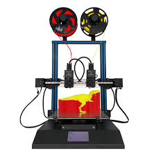
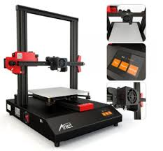

.jpg)
Una impresora 3D es una máquina capaz de realizar réplicas de diseños en 3D, creando piezas o maquetas volumétricas a partir de un diseño hecho por ordenador. Surgen con la idea de convertir archivos de 2D en prototipos reales o 3D. Comúnmente se ha utilizado en el prefabricado de piezas o componentes, en sectores como la arquitectura y el diseño industrial. En la actualidad se está extendiendo su uso en la fabricación de todo tipo de objetos, modelos para vaciado, piezas complicadas, alimentos, prótesis médicas (ya que la impresión 3D permite adaptar cada pieza fabricada a las características exactas de cada paciente)
Usando material en filamentos previamente extruidos, el modelado por deposición fundida, una tecnología desarrollada por Stratasys12, usa una tobera para depositar material fundido sobre una estructura soporte generalmente en sentido horizontal, capa a capa. Cuando se acaba una capa, se empieza la siguiente. Cada capa puede estar formada por un único objeto, por objetos independientes o por objetos ligados entre sí. No es posible una vez que se ha impreso una capa de descender en altura para hacer una capa inferior. Este sistema es muy usado en prototipado rápido tradicional y, dado su bajo coste, se ha popularizado mucho a nivel doméstico.
 impresora 1  impresora 2
impresora 3